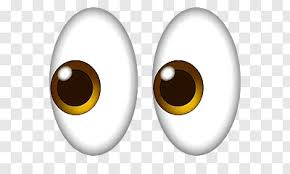

Over here is my super awesome SMASH BROS clip. I guess you could say I'm kinda really tuff at playing smash BROS. Since I've played The Binding of Isaac for basically forever and ever, I wanted to show everyone another game I've played since basically forever and ever. I've been going to these little tournaments for like 2 years or something and I'm pretty dang tuff no lie. I beat up grown men bro it's lowkey a bit embarrassing for them. They had 25 years to train smh. By the way, this takes so much practice!!!! It's pretty dang hard even though it's a silly nerd game. Sometimes I win money, but most of the time it just makes me a broke chud.
